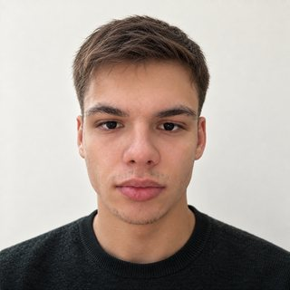

Входящие обращения
Собрать заявки из почты, форм и мессенджеров, проверить обязательные данные, назначить ответственного и не потерять срок.
почта · Telegram · CRM · таблицы
Убираю ручную обработку заявок, документов и данных. Сначала разбираю процесс и считаю эффект — потом строю.
Подключаюсь там, где люди каждый день переносят данные, сверяют документы или принимают однотипные решения по правилам.
Собрать заявки из почты, форм и мессенджеров, проверить обязательные данные, назначить ответственного и не потерять срок.
Разобрать файл, сверить поля, найти расхождения, собрать документ по шаблону и оставить человеку только исключения.
Классифицировать текст, подготовить черновик, провести исследование по источникам — с проверкой фактов и ручным подтверждением.
Не начинаю с большой платформы. Берём один повторяющийся участок и проверяем решение на вашей реальной работе.
Какие данные приходят, кто принимает решения, где случаются задержки и ошибки.
Что делает система, что остаётся человеку, как измеряем пользу и какие есть риски.
Без перестройки всего бизнеса. Проверяем на настоящих данных и исправляем слабые места.
Доступы, инструкция, резервирование и понятный порядок действий при сбое.
Если процесс нельзя описать, данные нельзя использовать законно или стоимость решения выше ожидаемой экономии. Иногда лучшая автоматизация — поправить регламент или таблицу; так и скажу.

Письмо читает и отвечает на него тот же человек, который потом будет всё это собирать.
Опишите в двух–трёх абзацах, что сотрудники повторяют каждый день и где теряется время. Я задам уточняющие вопросы и скажу, есть ли здесь задача для автоматизации.
Написать на vankov@deploid.ru